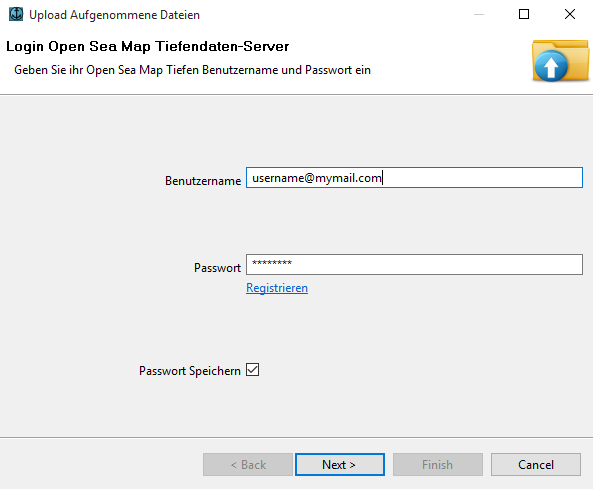
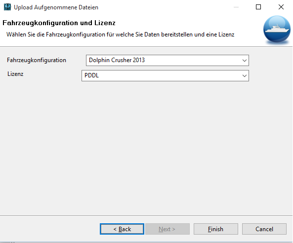

Daten Hochladen
Sie können aufgezeichnete Daten an OpenSeaMap hochladen, um die bathymetrischen Daten zu verbessern und gute Karten mit aktuallen Tiefen zu erhalten.
Wenn Sie keinen Tiefendaten Zugang habem, müssen Sie einen auf der Website erstellen.
Erstellen Sie auch eine Fahrzeugkonfiguration mit den technischen Parametern auf der Webseite.
Schalten Sie danach zum Upload Wizard zurück und geben Sie dort ihre Zugangsdaten an.

Dann können Sie die Lizenz und die Fahrzeugkonfiguraiton auswählen. Achtung: Das Hochladen ist nicht möglich ohne diese Felder auszuwählen.

Drücken Sie Fertigstellen und das Hochladen der aufgezeichneten Dateien beginnt.